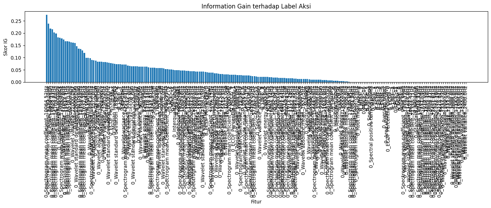
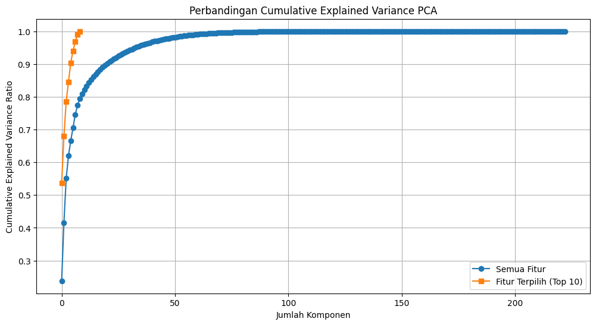
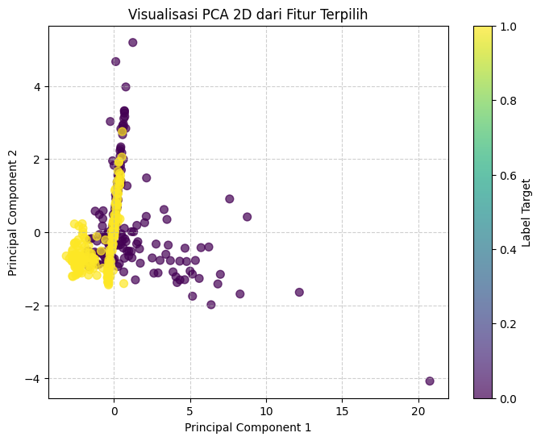
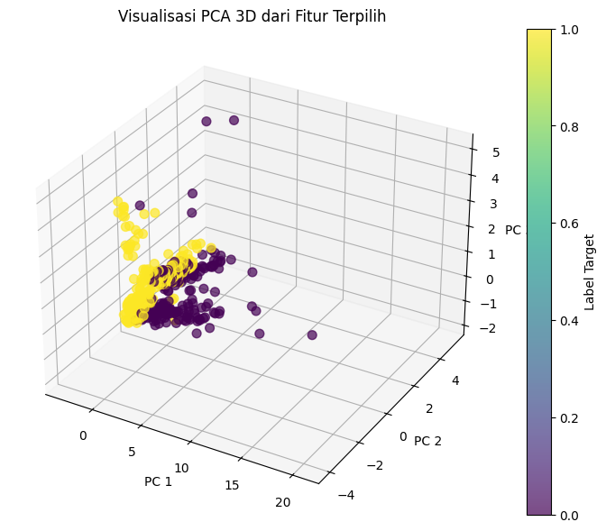
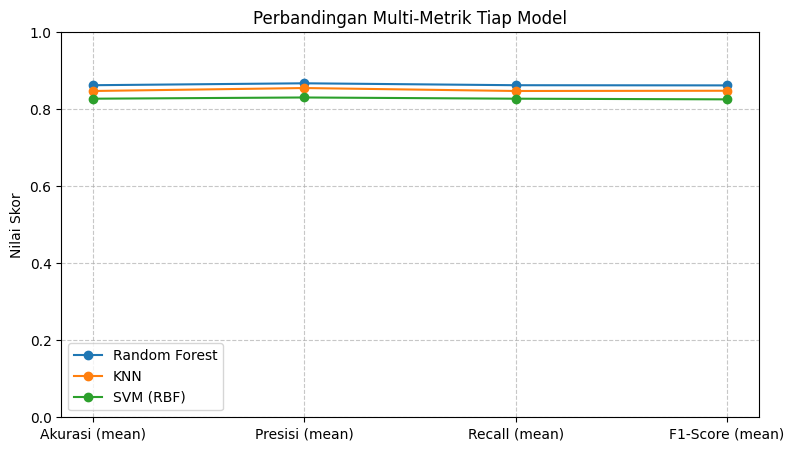

Project Time Series Audio Dataset With MultiLabel#
import os
import pandas as pd
import librosa
import warnings
import tsfel
from tqdm import tqdm
import numpy as np
import seaborn as sns
from sklearn.preprocessing import LabelEncoder, MinMaxScaler
from sklearn.impute import SimpleImputer
from sklearn.feature_selection import mutual_info_classif
import matplotlib.pyplot as plt
from sklearn.model_selection import train_test_split
from sklearn.neighbors import KNeighborsClassifier
from sklearn.metrics import accuracy_score
from sklearn.preprocessing import StandardScaler
from sklearn.decomposition import PCA
from sklearn.model_selection import KFold, cross_validate
from sklearn.model_selection import KFold, cross_val_score
from sklearn.metrics import accuracy_score, classification_report
from sklearn.metrics import make_scorer, accuracy_score, recall_score, f1_score, mean_absolute_percentage_error
from sklearn.svm import SVC
from sklearn.ensemble import RandomForestClassifier
from sklearn.model_selection import cross_val_score, StratifiedKFold
import joblib
Membaca Dataset#
# -- Mengabaikan peringatan dari librosa terkait format non-wav --
warnings.filterwarnings('ignore', category=UserWarning, module='librosa')
# Konfigurasi Path dan Label
dataset_path = 'dataset/audio'
def load_audio_dataset(dataset_path=dataset_path, valid_exts=('.aac', '.mp3')):
"""
Membaca seluruh file audio dari dataset dengan struktur multi-label.
Return: list berisi dictionary (filename, audio_signal, sr, label_aksi, label_identitas)
"""
if not os.path.exists(dataset_path):
raise FileNotFoundError(f"❌ Folder '{dataset_path}' tidak ditemukan.")
print("🚀 Memulai proses pembacaan file audio dari struktur multi-label...\n")
data_list = []
# Ambil semua folder label di dalam dataset/audio
label_folders = [
f for f in os.listdir(dataset_path)
if os.path.isdir(os.path.join(dataset_path, f))
]
# Loop tiap folder (contoh: 'buka fauzan', 'tutup fikri')
for folder_name in label_folders:
folder_path = os.path.join(dataset_path, folder_name)
# Pisahkan nama folder menjadi dua label
try:
label_aksi, label_identitas = folder_name.strip().split(' ')
except ValueError:
print(f"⚠️ Format folder '{folder_name}' tidak sesuai (harus 'aksi identitas'). Dilewati.\n")
continue
print(f"📂 Membaca folder: {folder_name} ...")
# Loop semua file audio di dalam folder
for filename in os.listdir(folder_path):
if filename.lower().endswith(valid_exts):
file_path = os.path.join(folder_path, filename)
try:
# Membaca file audio
audio_signal, sr = librosa.load(file_path, sr=None)
data_list.append({
'filename': filename,
'audio_signal': audio_signal,
'sampling_rate': sr,
'label_aksi': label_aksi,
'label_identitas': label_identitas
})
except Exception as e:
print(f" ❌ Error membaca file '{filename}': {e}")
print("\n✅ Proses pembacaan data selesai.")
print(f"📊 Total file berhasil dibaca: {len(data_list)}")
return data_list
Ekstraksi Fitur#
def extract_features_tsfel(data_list):
"""
Mengekstraksi fitur dari setiap sinyal audio menggunakan TSFEL.
data_list: list hasil dari load_audio_dataset()
return: DataFrame berisi fitur + label
"""
# 1️⃣ Ambil konfigurasi default TSFEL (fitur temporal, statistical, spectral)
cfg = tsfel.get_features_by_domain()
feature_dfs = [] # Menyimpan hasil ekstraksi per file
print("🚀 Memulai proses ekstraksi fitur menggunakan TSFEL...\n")
for i, data in enumerate(data_list, 1):
signal = data['audio_signal']
sr = data['sampling_rate']
try:
# 2️⃣ Ekstraksi fitur untuk satu sinyal
features = tsfel.time_series_features_extractor(cfg, signal, fs=sr, verbose=0)
# 3️⃣ Tambahkan label & metadata ke hasil fitur
features['filename'] = data['filename']
features['label_aksi'] = data['label_aksi']
features['label_identitas'] = data['label_identitas']
feature_dfs.append(features)
print(f"✅ [{i}/{len(data_list)}] Fitur diekstrak untuk file: {data['filename']}")
except Exception as e:
print(f"❌ Error saat ekstraksi fitur {data['filename']}: {e}")
# 4️⃣ Gabungkan semua hasil fitur menjadi satu DataFrame besar
feature_df = pd.concat(feature_dfs, ignore_index=True)
print("\n🎉 Ekstraksi fitur selesai!")
print(f"📊 Total data fitur: {feature_df.shape[0]} baris, {feature_df.shape[1]} kolom")
return feature_df
if __name__ == "__main__":
# Jalankan kode membaca dataset
dataset = load_audio_dataset()
features_df = extract_features_tsfel(dataset)
🚀 Memulai proses pembacaan file audio dari struktur multi-label...
📂 Membaca folder: buka fauzan ...
C:\Users\MyBook Z Series\AppData\Local\Temp\ipykernel_13796\2150380174.py:38: UserWarning: PySoundFile failed. Trying audioread instead.
audio_signal, sr = librosa.load(file_path, sr=None)
D:\Perkuliahan\Semester 5\Poyek Sains Data\PSD\venv_py\Lib\site-packages\librosa\core\audio.py:184: FutureWarning: librosa.core.audio.__audioread_load
Deprecated as of librosa version 0.10.0.
It will be removed in librosa version 1.0.
y, sr_native = __audioread_load(path, offset, duration, dtype)
C:\Users\MyBook Z Series\AppData\Local\Temp\ipykernel_13796\2150380174.py:38: UserWarning: PySoundFile failed. Trying audioread instead.
audio_signal, sr = librosa.load(file_path, sr=None)
D:\Perkuliahan\Semester 5\Poyek Sains Data\PSD\venv_py\Lib\site-packages\librosa\core\audio.py:184: FutureWarning: librosa.core.audio.__audioread_load
Deprecated as of librosa version 0.10.0.
It will be removed in librosa version 1.0.
y, sr_native = __audioread_load(path, offset, duration, dtype)
📂 Membaca folder: buka fikri ...
📂 Membaca folder: tutup fauzan ...
📂 Membaca folder: tutup fikri ...
✅ Proses pembacaan data selesai.
📊 Total file berhasil dibaca: 400
🚀 Memulai proses ekstraksi fitur menggunakan TSFEL...
D:\Perkuliahan\Semester 5\Poyek Sains Data\PSD\venv_py\Lib\site-packages\tsfel\feature_extraction\calc_features.py:195: SyntaxWarning: invalid escape sequence '\*'
\**kwargs:
---------------------------------------------------------------------------
KeyboardInterrupt Traceback (most recent call last)
Cell In[5], line 4
1 if __name__ == "__main__":
2 # Jalankan kode membaca dataset
3 dataset = load_audio_dataset()
----> 4 features_df = extract_features_tsfel(dataset)
Cell In[4], line 20, in extract_features_tsfel(data_list)
16 sr = data['sampling_rate']
18 try:
19 # 2️⃣ Ekstraksi fitur untuk satu sinyal
---> 20 features = tsfel.time_series_features_extractor(cfg, signal, fs=sr, verbose=0)
22 # 3️⃣ Tambahkan label & metadata ke hasil fitur
23 features['filename'] = data['filename']
File D:\Perkuliahan\Semester 5\Poyek Sains Data\PSD\venv_py\Lib\site-packages\tsfel\feature_extraction\calc_features.py:379, in time_series_features_extractor(config, timeseries, fs, window_size, overlap, verbose, **kwargs)
374 raise SystemExit(
375 "n_jobs value is not valid. " "Choose an integer value or None for no multiprocessing.",
376 )
377 # single window
378 else:
--> 379 features_final = calc_window_features(
380 config,
381 timeseries,
382 fs,
383 verbose=verbose,
384 features_path=features_path,
385 header_names=names,
386 single_window=True,
387 )
389 # Assuring the same feature extraction order
390 features_final = features_final.reindex(sorted(features_final.columns), axis=1)
File D:\Perkuliahan\Semester 5\Poyek Sains Data\PSD\venv_py\Lib\site-packages\tsfel\feature_extraction\calc_features.py:517, in calc_window_features(config, window, fs, verbose, single_window, **kwargs)
515 for ax in range(len(header_names)):
516 sig_ax = window if single_axis else window[:, ax]
--> 517 eval_result_ax = feature_funcs[func_total](sig_ax, **parameters_total)
518 # Function returns more than one element
519 if isinstance(eval_result_ax, tuple):
File D:\Perkuliahan\Semester 5\Poyek Sains Data\PSD\venv_py\Lib\site-packages\tsfel\feature_extraction\features.py:1727, in wavelet_std(signal, fs, wavelet, max_width)
1724 max_width = int(max_width)
1725 widths = np.arange(1, max_width)
-> 1727 coeffs, frequencies = continuous_wavelet_transform(signal=signal, fs=fs, wavelet=wavelet, widths=widths)
1728 f_keys = np.round(frequencies, 2).astype(str)
1730 return {"names": [f + "Hz" for f in f_keys], "values": np.std(coeffs, axis=1)}
File D:\Perkuliahan\Semester 5\Poyek Sains Data\PSD\venv_py\Lib\site-packages\tsfel\feature_extraction\features_utils.py:371, in continuous_wavelet_transform(signal, fs, wavelet, widths)
351 def continuous_wavelet_transform(signal, fs, wavelet="mexh", widths=np.arange(1, 10)):
352 """Computes CWT (continuous wavelet transform) of the signal.
353
354 Parameters
(...) 368 matrix with size (len(widths),len(signal))
369 """
--> 371 coefficients, frequencies = pywt.cwt(signal, widths, wavelet, sampling_period=1 / fs)
373 return coefficients, frequencies
File D:\Perkuliahan\Semester 5\Poyek Sains Data\PSD\venv_py\Lib\site-packages\pywt\_cwt.py:157, in cwt(data, scales, wavelet, sampling_period, method, axis, precision)
155 if method == 'conv':
156 if data.ndim == 1:
--> 157 conv = np.convolve(data, int_psi_scale)
158 else:
159 # batch convolution via loop
160 conv_shape = list(data.shape)
File D:\Perkuliahan\Semester 5\Poyek Sains Data\PSD\venv_py\Lib\site-packages\numpy\_core\numeric.py:903, in convolve(a, v, mode)
901 if len(v) == 0:
902 raise ValueError('v cannot be empty')
--> 903 return multiarray.correlate(a, v[::-1], mode)
KeyboardInterrupt:
Seleksi Fitur Menggunakan Penilaian Score dari Information Gain#
def feature_selection_information_gain(features_df):
# 1️⃣ Pisahkan fitur dan label
X = features_df.drop(columns=["label_aksi", "label_identitas"], errors="ignore")
y_aksi = features_df["label_aksi"]
y_identitas = features_df["label_identitas"]
# 2️⃣ Ambil hanya kolom numerik (hindari string seperti nama file)
X = X.select_dtypes(include=[np.number])
# 3️⃣ Tangani missing value (NaN)
imputer = SimpleImputer(strategy='median')
X_imputed = imputer.fit_transform(X)
# 4️⃣ Encode label menjadi angka
le_aksi = LabelEncoder()
le_identitas = LabelEncoder()
y_aksi_encoded = le_aksi.fit_transform(y_aksi)
y_identitas_encoded = le_identitas.fit_transform(y_identitas)
# 5️⃣ Hitung Information Gain (Mutual Information)
ig_aksi = mutual_info_classif(X_imputed, y_aksi_encoded, discrete_features='auto')
ig_identitas = mutual_info_classif(X_imputed, y_identitas_encoded, discrete_features='auto')
# 6️⃣ Gabungkan hasil ke DataFrame
ig_df = pd.DataFrame({
"Feature": X.columns,
"IG_Aksi": ig_aksi,
"IG_Identitas": ig_identitas
}).sort_values(by="IG_Aksi", ascending=False)
# 7️⃣ Visualisasi skor
plt.figure(figsize=(14, 6))
plt.bar(range(len(ig_df)), ig_df["IG_Aksi"])
plt.xticks(range(len(ig_df)), ig_df["Feature"], rotation=90)
plt.title("Information Gain terhadap Label Aksi")
plt.xlabel("Fitur")
plt.ylabel("Skor IG")
plt.tight_layout()
plt.show()
return ig_df
Visualisasi Score Fitur Information Gain#
if __name__ == "__main__":
ig_results = feature_selection_information_gain(features_df)
print("\n🔝 10 fitur dengan Information Gain tertinggi terhadap label_aksi:")
print(ig_results.head(10))

🔝 10 fitur dengan Information Gain tertinggi terhadap label_aksi:
Feature IG_Aksi IG_Identitas
156 0_Spectrogram mean coefficient_10064.52Hz 0.274687 0.661489
186 0_Spectrogram mean coefficient_9290.32Hz 0.238721 0.683429
66 0_Power bandwidth 0.217958 0.229815
157 0_Spectrogram mean coefficient_10838.71Hz 0.215646 0.650519
164 0_Spectrogram mean coefficient_15483.87Hz 0.202114 0.650519
162 0_Spectrogram mean coefficient_14709.68Hz 0.198843 0.672459
136 0_Wavelet entropy 0.181960 0.174322
20 0_Fundamental frequency 0.181139 0.478973
161 0_Spectrogram mean coefficient_13935.48Hz 0.178258 0.672459
196 0_Wavelet energy_12000.0Hz 0.174477 0.661489
def feature_selection_information_gain(features_df):
# 1️⃣ Pisahkan fitur dan label
X = features_df.drop(columns=["label_aksi", "label_identitas"])
y_aksi = features_df["label_aksi"]
# 2️⃣ Pilih hanya kolom numerik
X_numeric = X.select_dtypes(include=[np.number])
# 3️⃣ Tangani missing value
imputer = SimpleImputer(strategy='median')
X_imputed = imputer.fit_transform(X_numeric)
# 4️⃣ Encode label
le_aksi = LabelEncoder()
y_aksi_encoded = le_aksi.fit_transform(y_aksi)
# 5️⃣ Hitung information gain
ig_scores = mutual_info_classif(X_imputed, y_aksi_encoded, discrete_features='auto', random_state=42)
ig_df = pd.DataFrame({
"Feature": X_numeric.columns,
"IG_Score": ig_scores
}).sort_values(by="IG_Score", ascending=False).reset_index(drop=True)
# ✅ Gunakan hanya kolom numerik, bukan X.columns
X_imputed_df = pd.DataFrame(X_imputed, columns=X_numeric.columns)
return ig_df, X_imputed_df, y_aksi_encoded
def evaluate_feature_reduction(ig_df, X, y, step=1):
# 1️⃣ Buang fitur dengan IG = 0
ig_df = ig_df[ig_df["IG_Score"] > 0].reset_index(drop=True)
print(f"Total fitur aktif setelah filter IG>0: {len(ig_df)}")
results = []
# 2️⃣ Looping dari semua fitur hingga 1 fitur (step 5)
for n_features in range(len(ig_df), 0, -step):
top_features = ig_df["Feature"].iloc[:n_features].tolist()
# Ambil subset X
X_subset = pd.DataFrame(X, columns=ig_df["Feature"])[top_features]
# Split data (train/test)
X_train, X_test, y_train, y_test = train_test_split(
X_subset, y, test_size=0.2, random_state=42
)
# Model KNN
model = KNeighborsClassifier(n_neighbors=5)
model.fit(X_train, y_train)
y_pred = model.predict(X_test)
acc = accuracy_score(y_test, y_pred)
results.append({
"Jumlah_Fitur": n_features,
"Akurasi": acc
})
print(f"Fitur: {n_features:3d} | Akurasi: {acc:.4f}")
# 3️⃣ Simpan hasil ke DataFrame
results_df = pd.DataFrame(results)
return results_df
Show Score Valuation with Reduce Feature#
if __name__ == "__main__":
# Asumsikan features_df sudah kamu punya dari tahap TSFEL
ig_df, X_imputed, y_aksi_encoded = feature_selection_information_gain(features_df)
# Evaluasi performa dengan pengurangan
results_df = evaluate_feature_reduction(ig_df, X_imputed, y_aksi_encoded, step=1)
# ============================================================
# 📈 Visualisasi hasil
# ============================================================
plt.figure(figsize=(10, 5))
plt.plot(results_df["Jumlah_Fitur"], results_df["Akurasi"], marker='o', linestyle='-')
plt.title("Evaluasi Akurasi terhadap Jumlah Fitur (KNN + Information Gain)")
plt.xlabel("Jumlah Fitur yang Digunakan")
plt.ylabel("Akurasi Model")
plt.gca().invert_xaxis()
plt.grid(True)
plt.show()
# Menampilkan fitur optimal
best_row = results_df.loc[results_df["Akurasi"].idxmax()]
print(f"\n🎯 Jumlah fitur optimal: {best_row['Jumlah_Fitur']}")
print(f"📊 Akurasi tertinggi: {best_row['Akurasi']:.4f}")
Total fitur aktif setelah filter IG>0: 172
Fitur: 172 | Akurasi: 0.4125
Fitur: 171 | Akurasi: 0.4125
Fitur: 170 | Akurasi: 0.4125
Fitur: 169 | Akurasi: 0.4125
Fitur: 168 | Akurasi: 0.4125
Fitur: 167 | Akurasi: 0.4125
Fitur: 166 | Akurasi: 0.4125
Fitur: 165 | Akurasi: 0.4125
Fitur: 164 | Akurasi: 0.4125
Fitur: 163 | Akurasi: 0.4125
Fitur: 162 | Akurasi: 0.4125
Fitur: 161 | Akurasi: 0.4125
Fitur: 160 | Akurasi: 0.4125
Fitur: 159 | Akurasi: 0.4125
Fitur: 158 | Akurasi: 0.4125
Fitur: 157 | Akurasi: 0.4125
Fitur: 156 | Akurasi: 0.4125
Fitur: 155 | Akurasi: 0.4125
Fitur: 154 | Akurasi: 0.4125
Fitur: 153 | Akurasi: 0.4125
Fitur: 152 | Akurasi: 0.4125
Fitur: 151 | Akurasi: 0.4125
Fitur: 150 | Akurasi: 0.4125
Fitur: 149 | Akurasi: 0.4125
Fitur: 148 | Akurasi: 0.4125
Fitur: 147 | Akurasi: 0.4125
Fitur: 146 | Akurasi: 0.4125
Fitur: 145 | Akurasi: 0.4125
Fitur: 144 | Akurasi: 0.4125
Fitur: 143 | Akurasi: 0.4125
Fitur: 142 | Akurasi: 0.4125
Fitur: 141 | Akurasi: 0.6625
Fitur: 140 | Akurasi: 0.6625
Fitur: 139 | Akurasi: 0.6625
Fitur: 138 | Akurasi: 0.6625
Fitur: 137 | Akurasi: 0.6625
Fitur: 136 | Akurasi: 0.6625
Fitur: 135 | Akurasi: 0.6625
Fitur: 134 | Akurasi: 0.6625
Fitur: 133 | Akurasi: 0.6625
Fitur: 132 | Akurasi: 0.6625
Fitur: 131 | Akurasi: 0.6625
Fitur: 130 | Akurasi: 0.6625
Fitur: 129 | Akurasi: 0.6625
Fitur: 128 | Akurasi: 0.6625
Fitur: 127 | Akurasi: 0.6625
Fitur: 126 | Akurasi: 0.6625
Fitur: 125 | Akurasi: 0.6625
Fitur: 124 | Akurasi: 0.6625
Fitur: 123 | Akurasi: 0.6625
Fitur: 122 | Akurasi: 0.6625
Fitur: 121 | Akurasi: 0.6625
Fitur: 120 | Akurasi: 0.6625
Fitur: 119 | Akurasi: 0.6625
Fitur: 118 | Akurasi: 0.6625
Fitur: 117 | Akurasi: 0.6625
Fitur: 116 | Akurasi: 0.6625
Fitur: 115 | Akurasi: 0.6625
Fitur: 114 | Akurasi: 0.6625
Fitur: 113 | Akurasi: 0.6625
Fitur: 112 | Akurasi: 0.6625
Fitur: 111 | Akurasi: 0.6625
Fitur: 110 | Akurasi: 0.6625
Fitur: 109 | Akurasi: 0.6625
Fitur: 108 | Akurasi: 0.6625
Fitur: 107 | Akurasi: 0.6625
Fitur: 106 | Akurasi: 0.6625
Fitur: 105 | Akurasi: 0.6625
Fitur: 104 | Akurasi: 0.6625
Fitur: 103 | Akurasi: 0.7375
Fitur: 102 | Akurasi: 0.7375
Fitur: 101 | Akurasi: 0.7375
Fitur: 100 | Akurasi: 0.7375
Fitur: 99 | Akurasi: 0.7375
Fitur: 98 | Akurasi: 0.7375
Fitur: 97 | Akurasi: 0.7625
Fitur: 96 | Akurasi: 0.7625
Fitur: 95 | Akurasi: 0.7625
Fitur: 94 | Akurasi: 0.7625
Fitur: 93 | Akurasi: 0.7625
Fitur: 92 | Akurasi: 0.7625
Fitur: 91 | Akurasi: 0.7625
Fitur: 90 | Akurasi: 0.7625
Fitur: 89 | Akurasi: 0.7625
Fitur: 88 | Akurasi: 0.7500
Fitur: 87 | Akurasi: 0.7500
Fitur: 86 | Akurasi: 0.7500
Fitur: 85 | Akurasi: 0.7500
Fitur: 84 | Akurasi: 0.7500
Fitur: 83 | Akurasi: 0.7500
Fitur: 82 | Akurasi: 0.7500
Fitur: 81 | Akurasi: 0.7500
Fitur: 80 | Akurasi: 0.7500
Fitur: 79 | Akurasi: 0.7500
Fitur: 78 | Akurasi: 0.7500
Fitur: 77 | Akurasi: 0.7375
Fitur: 76 | Akurasi: 0.7375
Fitur: 75 | Akurasi: 0.7375
Fitur: 74 | Akurasi: 0.7375
Fitur: 73 | Akurasi: 0.7375
Fitur: 72 | Akurasi: 0.7375
Fitur: 71 | Akurasi: 0.7375
Fitur: 70 | Akurasi: 0.7375
Fitur: 69 | Akurasi: 0.7375
Fitur: 68 | Akurasi: 0.7375
Fitur: 67 | Akurasi: 0.7375
Fitur: 66 | Akurasi: 0.7375
Fitur: 65 | Akurasi: 0.7250
Fitur: 64 | Akurasi: 0.7250
Fitur: 63 | Akurasi: 0.7250
Fitur: 62 | Akurasi: 0.7250
Fitur: 61 | Akurasi: 0.7250
Fitur: 60 | Akurasi: 0.7250
Fitur: 59 | Akurasi: 0.7250
Fitur: 58 | Akurasi: 0.7250
Fitur: 57 | Akurasi: 0.7250
Fitur: 56 | Akurasi: 0.7250
Fitur: 55 | Akurasi: 0.7250
Fitur: 54 | Akurasi: 0.7250
Fitur: 53 | Akurasi: 0.7250
Fitur: 52 | Akurasi: 0.7250
Fitur: 51 | Akurasi: 0.7250
Fitur: 50 | Akurasi: 0.7250
Fitur: 49 | Akurasi: 0.7250
Fitur: 48 | Akurasi: 0.7250
Fitur: 47 | Akurasi: 0.7250
Fitur: 46 | Akurasi: 0.7250
Fitur: 45 | Akurasi: 0.7250
Fitur: 44 | Akurasi: 0.7250
Fitur: 43 | Akurasi: 0.7250
Fitur: 42 | Akurasi: 0.7250
Fitur: 41 | Akurasi: 0.7250
Fitur: 40 | Akurasi: 0.7250
Fitur: 39 | Akurasi: 0.7250
Fitur: 38 | Akurasi: 0.7250
Fitur: 37 | Akurasi: 0.7250
Fitur: 36 | Akurasi: 0.7250
Fitur: 35 | Akurasi: 0.7250
Fitur: 34 | Akurasi: 0.7250
Fitur: 33 | Akurasi: 0.7250
Fitur: 32 | Akurasi: 0.7250
Fitur: 31 | Akurasi: 0.7250
Fitur: 30 | Akurasi: 0.7250
Fitur: 29 | Akurasi: 0.7250
Fitur: 28 | Akurasi: 0.7250
Fitur: 27 | Akurasi: 0.7250
Fitur: 26 | Akurasi: 0.7625
Fitur: 25 | Akurasi: 0.7625
Fitur: 24 | Akurasi: 0.7625
Fitur: 23 | Akurasi: 0.7625
Fitur: 22 | Akurasi: 0.7625
Fitur: 21 | Akurasi: 0.7625
Fitur: 20 | Akurasi: 0.7625
Fitur: 19 | Akurasi: 0.7625
Fitur: 18 | Akurasi: 0.7625
Fitur: 17 | Akurasi: 0.8000
Fitur: 16 | Akurasi: 0.8000
Fitur: 15 | Akurasi: 0.8000
Fitur: 14 | Akurasi: 0.8000
Fitur: 13 | Akurasi: 0.8000
Fitur: 12 | Akurasi: 0.8000
Fitur: 11 | Akurasi: 0.8000
Fitur: 10 | Akurasi: 0.8000
Fitur: 9 | Akurasi: 0.8000
Fitur: 8 | Akurasi: 0.7000
Fitur: 7 | Akurasi: 0.7000
Fitur: 6 | Akurasi: 0.7000
Fitur: 5 | Akurasi: 0.7000
Fitur: 4 | Akurasi: 0.7000
Fitur: 3 | Akurasi: 0.7000
Fitur: 2 | Akurasi: 0.6375
Fitur: 1 | Akurasi: 0.6500

🎯 Jumlah fitur optimal: 17.0
📊 Akurasi tertinggi: 0.8000
Melakukan PCA terhadap Semua Fitur dan Jumlah Optimal Fitur#
Melakukan PCA Terhadap Semua Fitur dan Jumlah Optimal Fitur#
# ----------------------------
# Pisahkan fitur dan target
# ----------------------------
y = y_aksi_encoded
# Semua fitur (tanpa seleksi)
X_all = features_df.select_dtypes(include=['number']).copy()
# 10 fitur terbaik dari hasil Information Gain
top_features = ig_df["Feature"].iloc[:9].tolist()
# Dataset dengan 10 fitur terpilih
X_selected = X_all[top_features]
print(f"Jumlah data (baris): {len(X_all)}")
print(f"Jumlah fitur total: {X_all.shape[1]}")
print(f"Jumlah fitur terpilih: {len(top_features)}")
# ============================================
# 🧹 2️⃣ IMPUTASI NILAI HILANG (NaN)
# ============================================
imputer = SimpleImputer(strategy='mean')
# Imputasi untuk semua fitur
X_all_imputed = pd.DataFrame(imputer.fit_transform(X_all), columns=X_all.columns)
# Imputasi untuk fitur terpilih
X_selected_imputed = pd.DataFrame(imputer.fit_transform(X_selected), columns=X_selected.columns)
# ============================================
# ⚖️ 3️⃣ NORMALISASI (STANDARD SCALER)
# ============================================
scaler = StandardScaler()
X_all_scaled = scaler.fit_transform(X_all_imputed)
X_selected_scaled = scaler.fit_transform(X_selected_imputed)
# ============================================
# 📉 4️⃣ PCA UNTUK SEMUA FITUR
# ============================================
pca_all = PCA(n_components=None)
X_all_pca = pca_all.fit_transform(X_all_scaled)
explained_variance_all = pca_all.explained_variance_ratio_
cum_var_all = np.cumsum(explained_variance_all)
# ============================================
# 📊 5️⃣ PCA UNTUK FITUR TERPILIH
# ============================================
pca_selected = PCA(n_components=None)
X_selected_pca = pca_selected.fit_transform(X_selected_scaled)
explained_variance_selected = pca_selected.explained_variance_ratio_
cum_var_selected = np.cumsum(explained_variance_selected)
Jumlah data (baris): 400
Jumlah fitur total: 223
Jumlah fitur terpilih: 9
Visualisasi Perbandingan PCA Full Fitur dan Jumlah Optimal Fitur#
# ============================================
# 📈 6️⃣ VISUALISASI PERBANDINGAN PCA
# ============================================
plt.figure(figsize=(12, 6))
plt.plot(cum_var_all, label='Semua Fitur', marker='o')
plt.plot(cum_var_selected, label='Fitur Terpilih (Top 10)', marker='s')
plt.title('Perbandingan Cumulative Explained Variance PCA')
plt.xlabel('Jumlah Komponen')
plt.ylabel('Cumulative Explained Variance Ratio')
plt.legend()
plt.grid(True)
plt.show()
# ============================================
# 🧾 7️⃣ RINGKASAN HASIL
# ============================================
print("📘 Ringkasan PCA:")
print(f"Total komponen (semua fitur): {X_all_pca.shape[1]}")
print(f"Total komponen (fitur terpilih): {X_selected_pca.shape[1]}")
print(f"Explained variance (semua fitur, 5 pertama): {explained_variance_all[:5]}")
print(f"Explained variance (fitur terpilih, 5 pertama): {explained_variance_selected[:5]}")

📘 Ringkasan PCA:
Total komponen (semua fitur): 223
Total komponen (fitur terpilih): 9
Explained variance (semua fitur, 5 pertama): [0.23809842 0.17796223 0.13464869 0.06918949 0.04534788]
Explained variance (fitur terpilih, 5 pertama): [0.53703687 0.1430729 0.10466968 0.06108093 0.05803267]
# --- Ambil hasil PCA dari fitur terpilih ---
pca_2d = PCA(n_components=2)
pca_3d = PCA(n_components=3)
X_pca_2d = pca_2d.fit_transform(X_selected_scaled)
X_pca_3d = pca_3d.fit_transform(X_selected_scaled)
# --- Gabungkan label aksi dan identitas untuk teks ---
labels_combined = [f"{a} {b}" for a, b in zip(features_df["label_aksi"], features_df["label_identitas"])]
Visualisasi 2D#
# PCA 2D
# -----------------------------
pca_2d = PCA(n_components=2)
X_pca_2d = pca_2d.fit_transform(X_selected_scaled)
plt.figure(figsize=(8,6))
scatter = plt.scatter(X_pca_2d[:,0], X_pca_2d[:,1], c=y, cmap='viridis', s=50, alpha=0.7)
plt.title("Visualisasi PCA 2D dari Fitur Terpilih")
plt.xlabel("Principal Component 1")
plt.ylabel("Principal Component 2")
plt.colorbar(scatter, label="Label Target")
plt.grid(True, linestyle='--', alpha=0.6)
plt.show()

Visualisasi 3D#
# -----------------------------
# PCA 3D
# -----------------------------
pca_3d = PCA(n_components=3)
X_pca_3d = pca_3d.fit_transform(X_selected_scaled)
fig = plt.figure(figsize=(9,7))
ax = fig.add_subplot(111, projection='3d')
scatter = ax.scatter(
X_pca_3d[:,0], X_pca_3d[:,1], X_pca_3d[:,2],
c=y, cmap='viridis', s=50, alpha=0.7
)
ax.set_title("Visualisasi PCA 3D dari Fitur Terpilih")
ax.set_xlabel("PC 1")
ax.set_ylabel("PC 2")
ax.set_zlabel("PC 3")
fig.colorbar(scatter, ax=ax, label="Label Target")
plt.show()

Modeling Dan Evaluasi Model#
# 1️⃣ Dataset hasil Information Gain (fitur terpilih)
df_ig_ready = pd.DataFrame(X_selected_imputed, columns=X_selected.columns)
df_ig_ready["target"] = pd.Series(y)
# 2️⃣ Dataset hasil PCA dari semua fitur
df_pca_all_ready = pd.DataFrame(X_all_pca, columns=[f"PC{i+1}" for i in range(X_all_pca.shape[1])])
df_pca_all_ready["target"] = pd.Series(y)
# 3️⃣ Dataset hasil PCA dari fitur terpilih (IG top 10)
df_pca_selected_ready = pd.DataFrame(X_selected_pca, columns=[f"PC{i+1}" for i in range(X_selected_pca.shape[1])])
df_pca_selected_ready["target"] = pd.Series(y)
# Cetak ringkasan untuk verifikasi
print("✅ Dataset siap pakai:")
print(f"- df_ig_ready: {df_ig_ready.shape} (fitur terpilih)")
print(f"- df_pca_all_ready: {df_pca_all_ready.shape} (PCA semua fitur)")
print(f"- df_pca_selected_ready: {df_pca_selected_ready.shape} (PCA fitur terpilih)")
✅ Dataset siap pakai:
- df_ig_ready: (400, 10) (fitur terpilih)
- df_pca_all_ready: (400, 224) (PCA semua fitur)
- df_pca_selected_ready: (400, 10) (PCA fitur terpilih)
print(df_pca_selected_ready.tail())
PC1 PC2 PC3 PC4 PC5 PC6 PC7 \
395 -2.779099 -0.635367 1.481989 -0.420333 -0.134011 -0.110686 -0.009335
396 -2.560596 -0.608019 -0.452654 -0.442295 0.094328 -0.109178 0.013878
397 -2.471829 -0.652541 -0.715478 -0.303465 0.137607 -0.137801 0.065333
398 -2.225932 -0.769865 -0.521065 0.308748 0.177242 -0.046993 0.051670
399 -2.718479 -0.487734 1.631285 -0.189047 -0.089487 -0.088530 -0.007955
PC8 PC9 target
395 -0.116611 -0.021481 1
396 -0.196274 0.048303 1
397 -0.206228 0.094992 1
398 -0.202786 0.056437 1
399 -0.139553 -0.037063 1
Membuat Kolom Baru untuk Target#
features_df["target_gabungan"] = features_df["label_identitas"] + "_" + features_df["label_aksi"]
df_ig_ready['target'] = features_df['target_gabungan']
df_pca_all_ready['target'] = features_df['target_gabungan']
df_pca_selected_ready['target'] = features_df['target_gabungan']
Membandingkan Models KNN, RF, SVM#
# 1️. Pilih dataset yang ingin digunakan
dataset = df_pca_selected_ready
# Pisahkan fitur dan target
X = dataset.drop(columns=["target"])
le = LabelEncoder()
y = le.fit_transform(df_ig_ready["target"])
# 2️. Inisialisasi model-model yang akan dibandingkan
models = {
"KNN": KNeighborsClassifier(n_neighbors=5),
"SVM (RBF)": SVC(kernel="rbf", C=1, gamma="scale"),
"Random Forest": RandomForestClassifier(n_estimators=100, random_state=42)
}
# 3️. Konfigurasi K-Fold Cross Validation
kfold = StratifiedKFold(n_splits=5, shuffle=True, random_state=42)
# 4. Evaluasi setiap model
results = []
for name, model in models.items():
scores = cross_validate(
model, X, y, cv=kfold,
scoring=['accuracy', 'precision_macro', 'recall_macro', 'f1_macro']
)
results.append({
"Model": name,
"Akurasi (mean)": np.mean(scores['test_accuracy']),
"Presisi (mean)": np.mean(scores['test_precision_macro']),
"Recall (mean)": np.mean(scores['test_recall_macro']),
"F1-Score (mean)": np.mean(scores['test_f1_macro']),
"Std Akurasi": np.std(scores['test_accuracy'])
})
print(f"{name:15s} | Acc: {np.mean(scores['test_accuracy']):.4f} | F1: {np.mean(scores['test_f1_macro']):.4f}")
# 5️. Simpan hasil ke DataFrame dan tampilkan
results_df = pd.DataFrame(results).sort_values(by="Akurasi (mean)", ascending=False)
print("\n📊 Hasil Perbandingan Model:")
print(results_df.round(4))
# 6️. Visualisasi hasil perbandingan
plt.figure(figsize=(8, 5))
plt.bar(results_df["Model"], results_df["Akurasi (mean)"], yerr=results_df["Std Akurasi"], capsize=5)
plt.title("Perbandingan Akurasi Model")
plt.ylabel("Akurasi")
plt.xlabel("Model")
plt.ylim(0, 1)
plt.grid(axis='y', linestyle='--', alpha=0.7)
plt.show()
KNN | Acc: 0.8475 | F1: 0.8481
SVM (RBF) | Acc: 0.8275 | F1: 0.8258
Random Forest | Acc: 0.8625 | F1: 0.8621
📊 Hasil Perbandingan Model:
Model Akurasi (mean) Presisi (mean) Recall (mean) \
2 Random Forest 0.8625 0.8675 0.8625
0 KNN 0.8475 0.8552 0.8475
1 SVM (RBF) 0.8275 0.8307 0.8275
F1-Score (mean) Std Akurasi
2 0.8621 0.0285
0 0.8481 0.0348
1 0.8258 0.0200
metrics = ["Akurasi (mean)", "Presisi (mean)", "Recall (mean)", "F1-Score (mean)"]
results_df_melted = results_df.melt(id_vars="Model", value_vars=metrics, var_name="Metrik", value_name="Nilai")
plt.figure(figsize=(9, 5))
for model in results_df["Model"]:
subset = results_df_melted[results_df_melted["Model"] == model]
plt.plot(subset["Metrik"], subset["Nilai"], marker='o', label=model)
plt.title("Perbandingan Multi-Metrik Tiap Model")
plt.ylabel("Nilai Skor")
plt.ylim(0, 1)
plt.legend()
plt.grid(True, linestyle='--', alpha=0.7)
plt.show()

filename = "random_forest_audio_multilabel.joblib"
joblib.dump(model, "saved_models/" + filename)
print(f"✅ Model {filename} berhasil disimpan.")
✅ Model random_forest_audio_multilabel.joblib berhasil disimpan.
# Jika kamu juga ingin menyimpan PCA-nya (misal objek bernama pca_selected)
joblib.dump(pca_selected, "saved_models/pca_selected_audio_multilabel.joblib")
# Jika kamu menggunakan StandardScaler sebelumnya
joblib.dump(scaler, "saved_models/scaler_audio_multilabel.joblib")
['saved_models/scaler_audio_multilabel.joblib']